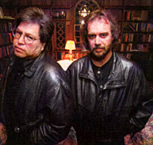

Inside Aftermath

Founded by artist/designer Rob Landeros and writer/director David Wheeler, Aftermath is dedicated to the ideal of realizing true, interactive storytelling, fulfilling the promise of multimedia and broadening the market for interactive entertainment software.We feel that, so far, the industry has barely scratched the surface of interactive storytelling and that the key to the future of entertainment is interactivity.
Our unique approach to interactive story development sets the company apart from other developers. Emphasizing the well-founded principles of storytelling such as plot, character development and pacing, our titles evoke something rare in interactive storytelling -- emotions. Aftermath's interactive stories scare, arouse, perplex, intrigue and engage. By combining the best elements of cinema, literature, visual arts and music with high production values and elegant, unique interactive design, Aftermath creates products which have an appeal that goes far beyond the limited range of the gaming community into that of the mass audience.
We believe substantive story content is universally appealing and suitable for delivery in all forms of media, including DVD, CD-ROM, film, television and the Internet.
Under the leadership and creative direction of co-founders David Wheeler and Rob Landeros, Aftermath's management team boasts a substantial collective experience in software development, artistic production and direction, filmmaking and interactive design. To take advantage of the best available resources — both technical and creative — Aftermath follows a Hollywood studio business model, which provides the company with the flexibility to bring aboard leading creative and technical talent for each project.